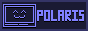

hi please use my new website for up to date stuff here |
|||||||
hi, i'm kit |
and this is my website |
||||||
here's some facts |
|
||||||
projects i do |
|
||||||
conlangs i made(click on a conlang's name to read example text!) |
|
||||||
my socials(discord: @toastermatt) |
|
||||||
88x31s |
 
|